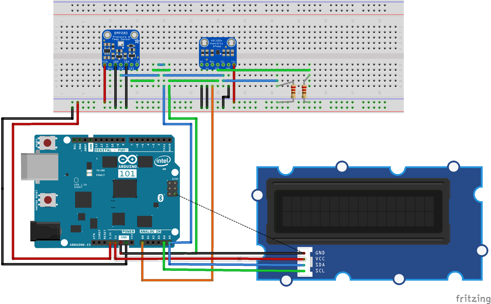
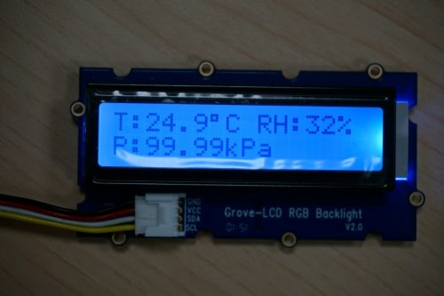

Environmental Sensing Sample
Overview
This sample implementes a simple environmental sensing service using the Arduino 101 board.
The sensor subsystem application collects temperature, humidity and pressure data from a set of sensors connected to the Arduino 101 and sends it to the SoC through IPM. The collected sensor data is also displayed by the sensor subsystem on a Grove LCD.
The application processor exposes the received sensor data as a simple Bluetooth Environmental Sensing Service.
Requirements
To use this sample, the following hardware is required:
- Arduino 101
- Grove LCD module
- Grove Base Shield [Optional]
- HDC1008 Sensor
- BME280 Sensor
Wiring
External Wiring
The sample uses the HDC1008 sensor for temperature and humidity measurement, and the BMP280 sensor for pressure measurement. This section describes how to wire these sensors to the Arduino 101 board.
Both sensors operate at 3.3V and use I2C to communicate with the Arduino. On the Arduino 101, the I2C data pin (SDA) is exposed as pin A4 (on the ANALOG IN header) and the I2C clock pin (SCL) as pin A5 (also on the ANALOG IN header). Since the Arduino 101 doesn’t have internal pull-up resistors, these need to be added externally when connecting SCL and SDA to the sensors.
In addition to connecting the ground (GND), 3.3V power (VDD and VDDIO) and I2C pins, both HDC1008 and BMP280 require some extra wiring.
For HDC1008, connect the address pins (A0 and A1) to GND (this sets the device address to the default used by the app). Also connect the RDY pin of the sensor to the A1 pin (on ANALOG IN header) of the Arduino board. This is needed as the application configures data-ready interrupt on that pin (GPIO pin 3).
For BMP280, connect the SDO pin to GND and the CSB pin to VDDIO, since the sensor needs to be setup to use I2C, and not SPI.
{kind=link}
Using board sensors
If you do not want to use any external sensors, you can use the Arduino 101’s internal BMI160 sensor to do just temperature readings. To do this, you need to modify the channel_info array from the sensor subsystem application to contain only BMI160’s temperature channel, and also remove the humidity and pressure characteristic from the control application (running on the application processor).
If you choose this approach and you also want to use the Grove LCD, then you also need to modify the sensor subsystem application to only display temperature on the LCD, as humidity and pressure values will not be available.
Grove LCD
Using the Grove LCD is optional and it can be disabled by removing the Grove configuration options from the arc/proj.conf file.
The Grove LCD communicates with the sensor subsystem through the I2C bus. When connecting the Grove LCD to the Arduino 101, either directly (similar to sensor wiring) or through a Grove Base Shield, you need to make sure that the I2C SDA and SCL lines have pull-up resistors connected between GND and the 3.3V power source.
Take note that even though SDA and SCL are connected to a 3.3V power source, the Grove LCD VDD line needs to be connected to the 5V power line, otherwise characters will not be displayed on the LCD (3.3V is enough to power just the backlight).
Building and Running
Building
This sample builds two applications for both the sensor subsystem (arc) and the application processor (x86). The resulting images need to be flashed to the device either using JTAG (openocd) or DFU util (USB).
Before using the environmental sensing sample, the Arduino 101 board needs to be flashed with the firmware for its nRF51 Bluetooth LE controller. To do this, follow the steps from:
https://wiki.zephyrproject.org/view/Arduino_101#Bluetooth_firmware_for_the_Arduino_101
The sample provide a single Makefile that builds both images, simple run
make in the top level directory of the application and flash either using JTAG
or using DFU. (DFU is preferred).
The sample can be found here: samples/environmental_sensing in the
Zephyr project tree.
$ make
$ make flash # for flashing with JTAG
Running
The ARC (Sensor Subsystem) program collects temperature, humidity and pressure data using the sensors API and sends it to the x86 core through an outbound IPM. The collected data is also displayed on a Grove LCD.
The x86 program reads the sensor data from an inbound IPM and exposes it as GATT characteristics (temperature, humidity and pressure) through a simple Bluetooth Environmental Sensing Service. The values of these characteristics are updated every time a new message containing sensor data is received.
An example of sensor data values that can be seen on the Grove LCD is illustrated in the image below.
{kind=link}
The data exposed over Bluetooth using an Environmental Sensing Service can be tested with a BLE Scanner app. The image below is a screenshot of such an application.
{kind=link}
The temperature value is 0xBA09 (little-endian) which is equal to 2490 in decimal. Since the Bluetooth specification states that temperature values are expressed with a resolution of 0.01 degrees Celsius, the value exposed over Bluetooth is the same as the one displayed on the Grove LCD (24.9 degrees Celsius).